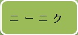
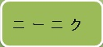
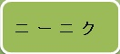

お問い合わせ

お問い合わせ

有機野菜は人間の健康だけではなく、地球をまもる。
有機肥料使用と農薬やめるだけではなく、土が自然循環できる
2017年時点では、日本の有機農業の耕作面積はわずか1万ヘクタール（耕作地の0.2%）
（国策として有機農業に力を入れているフランスでは200万ヘクタールが有機農業に使われ
ている）。2017年では、日本で作られるコメのわずか0.1%、野菜の0.35%しか「オーガニッ
ク」の認証を受けていない。
グローバル・オーガニック・トレード・ガイドによると、有機食品が日本の農産物の売
上高に占める割合は1.5%で、アメリカ（5.5%）、フランス（7.7%）、ドイツ（10.4%）と比
べるとわずかだ。また、有機市場規模（約5.9億ドル）は世界13位で、1人当たりの有機食品
購入額（約4.7ドル）は23位と振るわない。購入額で見ると、アメリカ人は日本人の15倍、
フランス人は13倍、スイス人に至っては34倍に上る。
一方、世界に目を転じると、有機農業市場は伸び盛りで、世界の有機食品市場規模は
2018年に初めて1000億ドル（約10兆6000億円）を超え、今後も各地で成長が期待されてい
る。それにもかかわらず、日本はなぜこの分野で後れを取っているのだろうか。
株式会社 コッカファーム 株式会社 住吉
〒739-1101
広島県安芸高田市甲田町高田原1373-2
TEL:0826-45-7005
FAX:0826-45-3255
Copyright（C）inaka gurashi All Rights Reserved.new